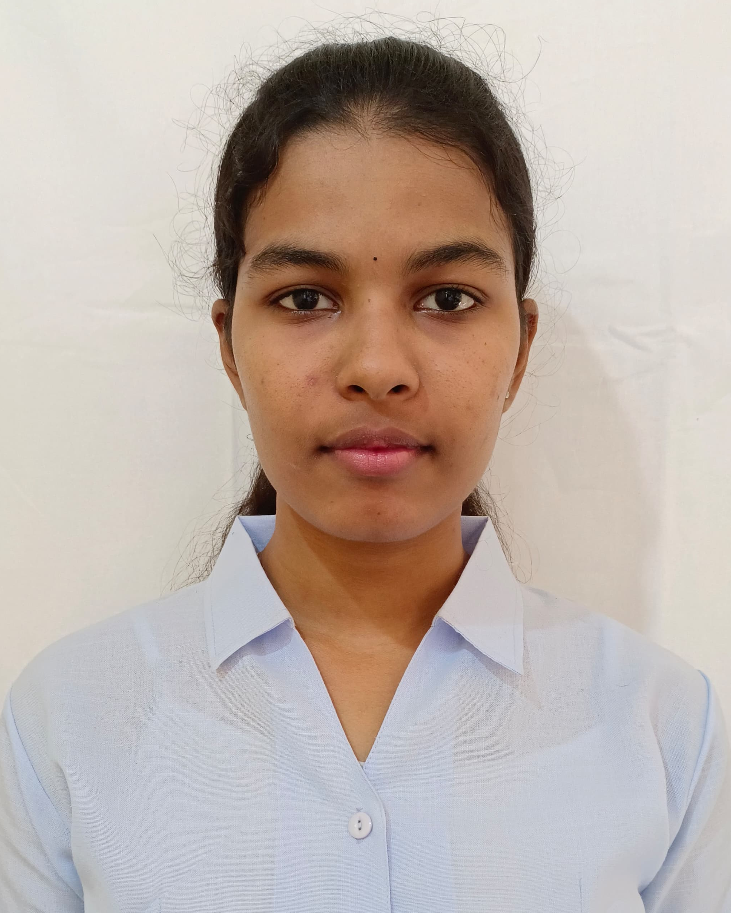

Bontula Praveena

My Career Objective
As a recent Graduate iam eager to work in a challenging environment where i can continously enchance my skills and contribute effectively to the growth and success of the company
Education
- I have done my Electronics and Communication engineering in Vignan's Institute of Engineering For Women with 7.99 CGPA[2020-2024]
- I completed my board ofintermediate education(MPC stream) in sri chaitanya junior college with 9.65 CGPA[2018-2020]
- I have done my schooling at samyuktha KJM High school with 9.8 CGPA[2013-2018]
Technical skills
- Python Programing Language
- Html,Css,Javascript
- Sql
- AWS cloud computing
- Java and DSA Fundamentals
Internship
- AI internship by offered CognoRiseInfoTech
- Java Full Stack by offered Kodnest
- Frontend development offered by smartbridge
- embedded systems by offered by IndoGerman Institute of Advanced Technology
Achievements and Certifications
- Certified by Infosys Springboard for successfully completing "HTML5-THE LANGUAGE"
- Achieved a 5 star rating in Python on HackerRank
- Completed an Intensive Python Programming Course Offered by dataPro
- Earned and Microsoft Certification as a Azure Administrator Associate
Activites and Participation
- Sucessfully Participated in Two-Day Workshop on IOT-based Application using Raspberry pi & Python PRogramming at VIEW
- Completed 4 Day Training on Employability Skills under the life skills Program offered by rubicon
- showcased innovative project in two-day project expo as a part of techritz-2k22,a national level tech fest held by our college
My Projects
- Ecommerce shoestore website
- Ping Pong AI Game
- tictactoe using minimax ai algorithm
- image segmentation of ct scan lung images using modified unet architecture
my hobbies
my contact